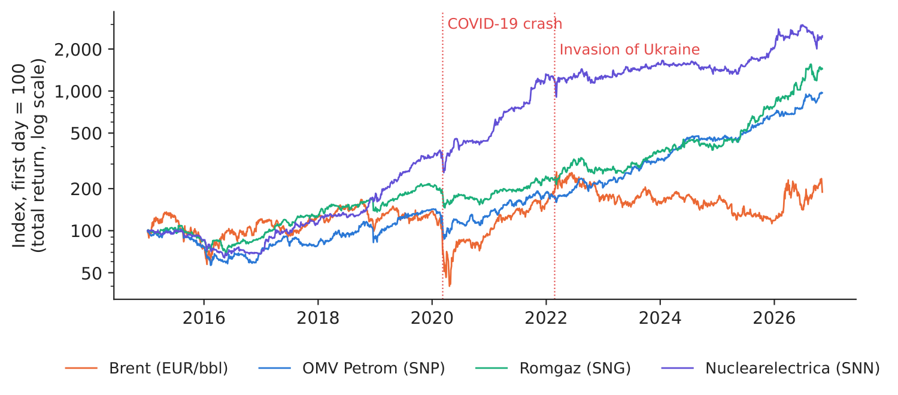
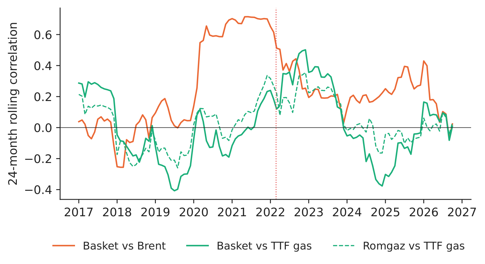
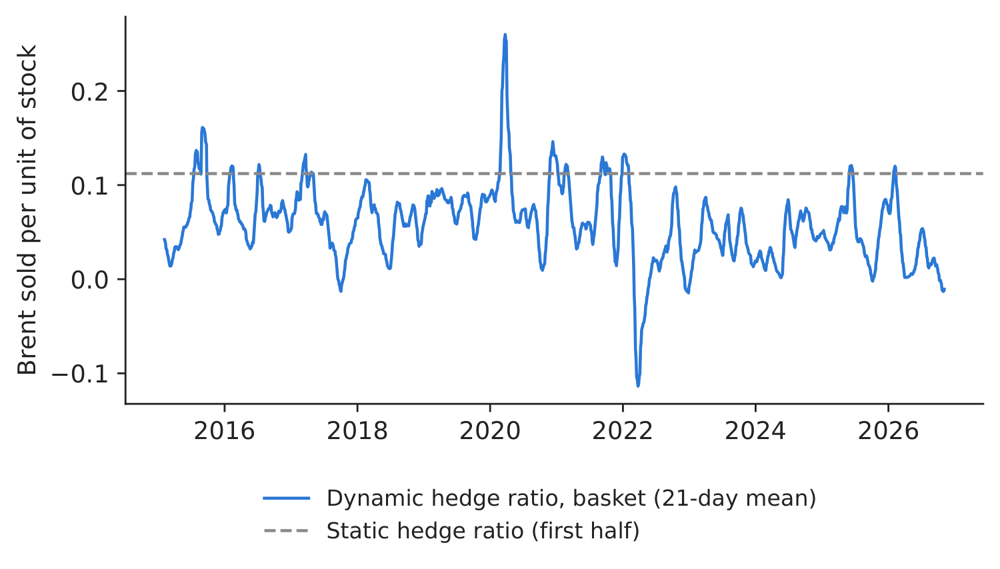
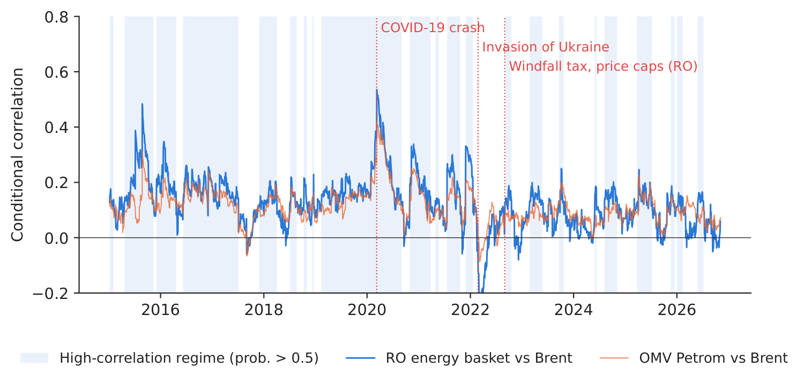

Case study 3 · Lecture 3
Romanian energy stocks and oil — time-varying correlation and hedging
Prof. dr. Daniel Traian PELE
Bucharest University of Economic Studies, Department of Statistics and Econometrics
Romanian Academy, Institute for Economic Forecasting
The paper
Grecu, R. A., Cramer, A. A., Pele, D. T. & Lessmann, S. (2025). The link between energy prices and stock markets in European Union countries. The North American Journal of Economics and Finance, 78, 102420. doi:10.1016/j.najef.2025.102420
Materials
The business question
The treasury of a Romanian energy group holds a portfolio of listed energy shares (OMV Petrom, Romgaz, Nuclearelectrica), and a pension fund holds the same shares for its clients. After the oil shocks of 2020 and 2022 the risk committee asks two questions. Is the link between these shares and oil stable, or does it switch with crises? And can we cut the risk of the position by selling Brent futures? The answer decides whether the committee approves a commodity hedging programme or relies on diversification.
The reference paper
Question. How do changes in oil and gas prices influence the returns of the main stock indices of the 27 European Union (EU) countries, and does the link differ by region (Central and Eastern Europe, CEE; North; South; West) and by industrial development (Abstract; Introduction)?
Data. 27 national indices (Romania's BET, Bucharest Exchange Trading, the main index of the Bucharest Stock Exchange included), generic Brent and European (TTF, Title Transfer Facility) gas futures, Bloomberg, 2010–2023; daily data for the correlations, quarterly data for the shock analysis (Section 3.1, Table 1).
Method. DCC-GARCH (Dynamic Conditional Correlation with Generalised AutoRegressive Conditional Heteroskedasticity) for the daily correlation; a two-regime Markov-switching model on that correlation; TVP-VAR (Time-Varying Parameter Vector AutoRegression) impulse responses to oil and gas shocks.
Main findings of the paper.
- The correlation with oil “was predominantly positive, generally ranging between 0 and 0,4. However, the capital market index in the CEE region was, on average, the least correlated” (Section 4.1). For CEE the maximum was 0.53 (2020) and the minimum \(-0.11\) (2022) (Table 2).
- Regimes are persistent: “the probability of remaining in the same regime … is very high, above 98 percent in all of the EU region” (Section 4.1, Table 4).
- Gas: correlations “typically in the range of \(-0.3\) to 0.2”; after Russia's invasion of Ukraine the CEE correlation with gas dropped below \(-0.4\) (Section 4.1, Table 5).
- “European capital markets are more closely correlated with oil price dynamics than with gas price dynamics”; more industrialised countries are more strongly linked to oil (Conclusions; Table 8).
Section and table numbers refer to the authors' revised manuscript; the published article (open access, CC, Creative Commons BY) may number pages differently.
The method, step by step
Intuition of the method
A single correlation computed over ten years hides everything a risk manager cares about: in a crash all shares fall together, in quiet times they drift apart. DCC-GARCH gives one correlation per day, updated with every new return; the Markov model then asks whether that daily correlation lives in a “high” or a “low” regime and how often it switches.
Let \(r_{i,t}\) be the daily log return of asset \(i\) (%). Step 1 fits a GARCH(1,1) to each return, \(\sigma^2_{i,t}=\omega_i+\alpha_i\varepsilon^2_{i,t-1}+\beta_i\sigma^2_{i,t-1}\), and standardises it: \(z_{i,t}=\varepsilon_{i,t}/\sigma_{i,t}\). Step 2 (DCC, dynamic conditional correlation) updates a “quasi-correlation” matrix \(Q_t=(1-a-b)\bar Q+a\,\mathbf z_{t-1}\mathbf z_{t-1}'+b\,Q_{t-1}\), where \(\bar Q\) is the average correlation of the \(z\)'s, \(a\) measures the reaction to news and \(b\) the persistence (\(a,b\ge0\), \(a+b<1\)); the conditional correlation is \(\rho_t=Q_{12,t}/\sqrt{Q_{11,t}Q_{22,t}}\). Step 3 (Markov switching) writes \(\rho_t=\mu_{s_t}+u_t\), where the hidden regime \(s_t\in\{H,L\}\) follows a Markov chain with \(p_{HH}=\Pr(s_t=H\mid s_{t-1}=H)\) and \(p_{LL}\); \(1/(1-p_{HH})\) is the expected duration of the high regime in days. For the hedge, selling \(h\) units of Brent per unit of shares gives the return \(r_s-h\,r_b\); its variance is smallest at \(h^*=\rho\,\sigma_s/\sigma_b\), and the DCC model gives a daily \(h^*_t=\rho_t\sigma_{s,t}/\sigma_{b,t}\).
In practice
A hedge only works if the correlation is high and stable. With a correlation of 0.1–0.2 the best hedge removes at most \(\rho^2\approx1\)–4 % of the variance — not worth the margin calls and the basis risk.
Replication on the course data
Notebook C3_notebook_EN.ipynb: dividend-adjusted closing prices of SNP, SNG and SNN (EODHD, EOD Historical Data, a market-data provider) and Brent in EUR (Yahoo Finance, ECB, European Central Bank), 06 January 2015 – 04 November 2026, 2,860 common trading days; an equal-weight “RO [Romania] energy basket”.
Classroom implementation: three companies instead of 27 indices; 2015–2026 instead of 2010–2023; monthly TTF (World Bank) for gas, because daily TTF is not free.

Figure 1. Total-return indices of the three shares and Brent (log scale).
Source: EODHD; Yahoo Finance; 06 January 2015–04 November 2026.

Figure 2. DCC correlation with Brent; shaded: high-correlation regime.
Source: our DCC-GARCH and Markov-switching estimates.
Table 1. DCC correlation with Brent and Markov-switching regimes (\(p_{HH}\), \(p_{LL}\): probability of staying in the high / low regime). Highest value in bold.
| Series vs Brent | Mean | Max | Year | Min | Year | High regime | Low regime | \(p_{HH}\) | \(p_{LL}\) |
|---|---|---|---|---|---|---|---|---|---|
| OMV Petrom (SNP) | 0.11 | 0.42 | 2020 | \(-\)0.09 | 2022 | 0.158 | 0.079 | 0.9828 | 0.9876 |
| Romgaz (SNG) | 0.10 | 0.43 | 2015 | \(-\)0.11 | 2022 | 0.146 | 0.079 | 0.9830 | 0.9897 |
| Nuclearelectrica (SNN) | 0.08 | 0.49 | 2020 | \(-\)0.32 | 2022 | 0.081 | 0.077 | 0.9759 | 0.9461 |
| RO energy basket | 0.13 | 0.54 | 2020 | \(-\)0.32 | 2022 | 0.187 | 0.050 | 0.9855 | 0.9823 |
Source: our computation; daily data 06 January 2015–04 November 2026. Paper, CEE region vs oil: max 0.53 (2020), min \(-0.11\) (2022), regimes 0.2553 / 0.1201, \(p_{00}\) = 0.9875, \(p_{11}\) = 0.9904 (Tables 2–4).
What our data show. The basket's correlation with Brent averages 0.13, peaks at 0.54 in 2020 and reaches its minimum, \(-\)0.32, in 2022 — the same calendar as the paper's CEE index (max 0.53 in 2020, min \(-0.11\) in 2022). The DCC parameters (\(a\) = 0.0210, \(b\) = 0.9496) mean that the correlation reacts slowly and is very persistent. The Markov model finds a high regime at 0.187 and a low one at 0.050, each lasting long (\(p_{HH}\) = 0.9855, \(p_{LL}\) = 0.9823); in the high regime, oil shocks move the three stocks noticeably more together. Monthly, the basket correlates more with Brent (0.28) than with TTF gas (0.09); even Romgaz, a gas producer, has only 0.10 with TTF — under the 2022–2025 Romanian price caps and windfall taxes, gas prices did not reach its earnings.

Figure 3. 24-month rolling correlation with Brent and with TTF gas.
Source: World Bank (TTF), EODHD, Yahoo Finance; monthly 2015–2026.

Figure 4. Dynamic (DCC) and static minimum-variance hedge ratio.
Source: our estimates.
Table 2. Hedging with Brent, out of sample (after December 2020, 1,429 trading days): variance reduction of the hedged position. Best value in bold.
| Position | Static \(h\) | Dynamic \(h_t\), mean | Variance cut, static, % | Variance cut, dynamic, % |
|---|---|---|---|---|
| RO energy basket | 0.112 | 0.090 | \(-\)6.9 | \(-\)1.7 |
| OMV Petrom (SNP) | 0.138 | 0.108 | \(-\)6.4 | \(-\)2.8 |
| Romgaz (SNG) | 0.099 | 0.128 | \(-\)2.7 | \(-\)2.8 |
| Nuclearelectrica (SNN) | 0.099 | 0.099 | \(-\)3.7 | \(-\)0.5 |
Source: our computation; negative = the hedge increased risk.
Decision number. Out of sample (GARCH and DCC parameters estimated on the first half only), the static Brent hedge cut the basket's variance by \(-\)6.9 % and the dynamic DCC hedge by \(-\)1.7 % (a negative value means that the hedge increased the variance) — no reduction at all. Brent futures are not a useful hedge for Romanian energy shares: their risk is driven by domestic regulation, dividends and the local market, not by oil.
Discussion questions for managers
- The paper finds the CEE index the least correlated with oil. What features of the Romanian market (state ownership, regulation, liquidity) could explain this?
- The correlation turned negative in 2022, exactly when oil prices exploded. Why might oil-company shares fall when oil rises?
- If the hedge does not reduce risk, what other instruments or policies would you use to manage the risk of this portfolio?
- The high-correlation regime lasts, on average, \(1/(1-p_{HH})\) days. How would you use that number in a risk-limit policy?
- Would you expect Hidroelectrica (listed 2023) to be linked to oil, to gas, to power prices or to rainfall? How would you test it?
Limitations of the classroom replication
(i) Our replication is explanatory, not a forecasting tool. (ii) Three companies are a small, regulation-dominated sample, not a market index; BET is not in our data. (iii) Bucharest and ICE (Intercontinental Exchange) trading days differ; returns over holidays mix several days. (iv) The gas leg is monthly and TTF is a converted World Bank average, not a traded daily price. (v) Our Markov model allows a different variance in each regime, so “high” and “low” are partly volatility regimes.
Summary of Case 3
- QuestionIs the link between RO energy shares and oil stable, and does a Brent hedge cut risk?
- DataDaily SNP, SNG, SNN and Brent (EUR), 2015–2026; monthly TTF.
- MethodGARCH + DCC daily correlation; 2-regime Markov switching; minimum-variance hedge.
- ResultMean corr. 0.13; max 0.54 (2020), min \(-\)0.32 (2022) — as in the paper's CEE index.
- DecisionDo not hedge the shares with Brent: out-of-sample variance cut \(-\)1.7 % (negative = more risk). Manage regulatory and local risk instead.

Source: our DCC-GARCH on EODHD and Yahoo Finance data, 06 January 2015–04 November 2026.
Abbreviations
| BET | Bucharest Exchange Trading, the main index of the Bucharest Stock Exchange |
|---|---|
| CC | Creative Commons |
| CEE | Central and Eastern Europe |
| DCC | dynamic conditional correlation |
| DCC-GARCH | dynamic conditional correlation GARCH model |
| ECB | European Central Bank |
| EODHD | EOD Historical Data, a market-data provider |
| EU | European Union |
| GARCH | generalised autoregressive conditional heteroskedasticity |
| ICE | Intercontinental Exchange |
| RO | Romania |
| SNG | stock-exchange ticker of Romgaz |
| SNN | stock-exchange ticker of Nuclearelectrica |
| SNP | stock-exchange ticker of OMV Petrom |
| TTF | Title Transfer Facility |
| TVP-VAR | time-varying parameter vector autoregression |
The text, numbers, charts and tables of this page are those of the case brief; every number is computed by the case notebook on the course data.